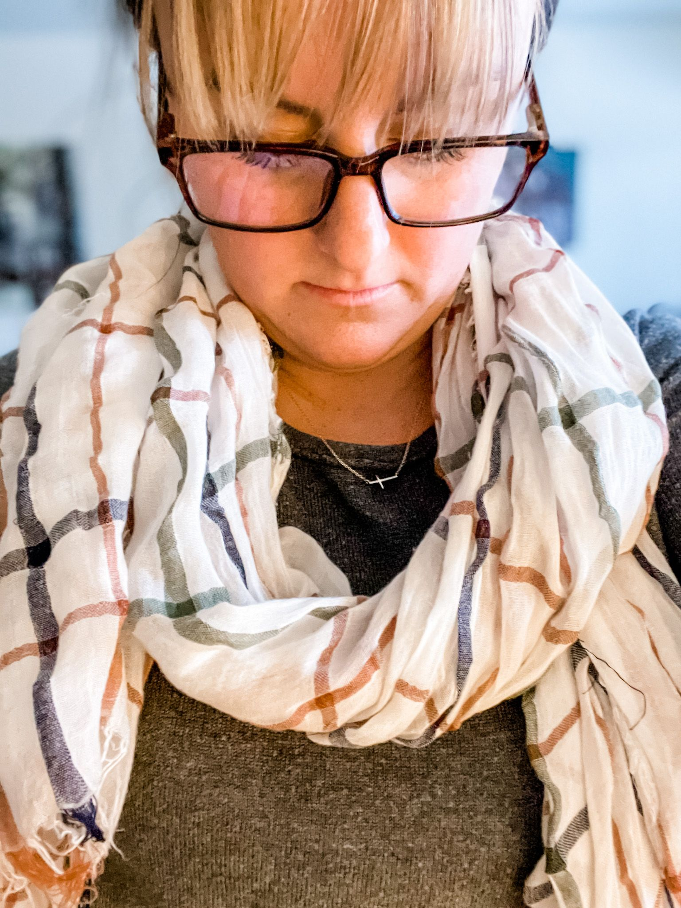

"How is it going?"
I see the question pop up on my phone.
I was 35-weeks pregnant.
It was a pandemic.
I was attempting to pickup groceries, but after a short peruse of the dairy aisle my Hyperemesis got the best of me. Running back to my car, I found myself throwing up in one of the many puke bags that had accumulated over the months.
Calling my friend I say,
"I am OVER THIS. I am tired of puking. I am tired.
More than that, I was upset that after deciding on the name Sloane for our baby girl, I was told it wasn't a name we could use.
The name meaning strength and in honor of a close family friend who died too soon, it was the one thing about this pregnancy that felt right.
Needless to say, I was done.
I was over having others, including my body, tell me what I could do.
Most of all the tears flowed for the months and months of sickness.
The vomiting, turned to dehydration, turned to blown veins, turned to daily IV meds, turned to my fluid bags hanging under the stars from a carabiner while feeling numb to my surroundings.
So here I was...
35-weeks into the greatest battle of my life and I was still unable to admit my defeat.
Looking back I realize even my tears had dried up, not enough liquid in my body to even waste on that.
As I began driving back to my home tucked into the mountains below the Swan Range, I glance down to see another text pop up.
"Come to my clinic. I know it's a Saturday but come here. I feel you need to come."
Haggard I arrive.
My friend had been sitting with another anxious woman in the midst of her own battle. Twins, anxiety, in the middle of that bloody battlefield I've come to know as motherhood.
Listening to her story, I could feel the heaviness weigh upon my chest.
It quickly turned to me and what to name my baby girl. My daughter, the one I had battled with for months on end.
"Close your eyes. Where are you laying?" My friend asks.
I'm by a stream, cold water rushing by.
"What do you see? Can you crawl to the stream?"
I see a green nausea cloud, it surrounds me, that green angry puke emoji, that's what I see.
"Can you get to the water?"
I am frozen. I can't seem to move my body. Move my limbs.
"No!" I cry. "I can't."
"Where do you see Jesus?" She asks.
He is with me. He's like a big peaceful Clifford Dog. Sitting with me in my pain.
"Can he help you to the water?"
"No. I won't get there until she, my daughter, is in my arms."
"Where do you see yourself once she's here?"
I see water. Fresh, clean water. I see the lake. I see us swimming, dancing, laughing. Splashing in the glory of freedom. No more PICC line. No more vomiting. No more fear.
My friend asks, "Where is jesus in that beauty?"
I see him on the shore, laughing with us.
"Now what is your daughters name?"
Lovely Lorelai.
My eyes pop WIDE open as we look at each other, giggling.
Where did THAT come from?
Looking up the meaning I cry dry tears.
She will be lovely. She will be our lovey. She will teach us to love once again.
Walking out of that office, the anxious woman with twins ran up to me.
"Take this necklace. God told me to give it to you. He will protect you."
Feeling bad for taking her precious necklace and thinking my fight was coming to an end in a few weeks, I resisted.
Adamantly she placed that necklace around my neck.
It would only come full circle months later.
After a postpartum hemorrhage and physical deficiencies I won't ever fully grasp from my 9-months of famine, I put my hand to my chest.
The necklace has never left. Neither has Jesus.
It was only this week that I took it off, finding it tangled, I handed it to my husband.
"Maybe it's time you pass it off. You will know the person." He says.
So with humble gratitude, I pass this necklace onward. To another mama in the midst of that bloody battlefield of motherhood.
Me, safely on the other side, yet still in the midst, fighting alongside her.
